Playbook do
Missionário 9forLives
Guia operacional completo para gestão de beneficiários, logística de entregas e prestação de contas na plataforma 9forLives.
A Visão e o Sistema
Antes de operar, entenda seu papel na batalha logística do Ato 5. O 9forLives não é apenas uma plataforma, é a infraestrutura permanente para que a Bíblia chegue a todos.
Como ler este manual
Para facilitar a leitura dinâmica e a tomada de decisão no campo, utilize a legenda abaixo em todas as seções.
Navegação
Onde você deve clicar ou qual tela acessar
Contexto estratégico
O porquê da funcionalidade e como ela afeta o sistema
Regra de ouro
Regras inegociáveis. O não cumprimento gera falhas logísticas
Dica de campo
Melhores práticas para aumentar a eficiência do trabalho
Checklist
Ações de verificação obrigatória antes de prosseguir
Acesso, internacionalização e o seu "hub" logístico
O sistema é o seu escritório virtual. Ele conecta a necessidade real no campo com financiadores ao redor do mundo.
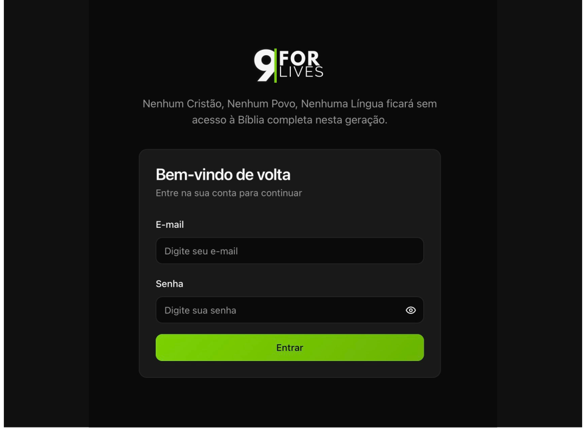
Ação
Insira o e-mail principal cadastrado e sua senha na tela de login.
Contexto
Seu e-mail é sua chave de segurança e rastreabilidade. Todas as operações feitas neste login são de sua inteira responsabilidade perante a organização.
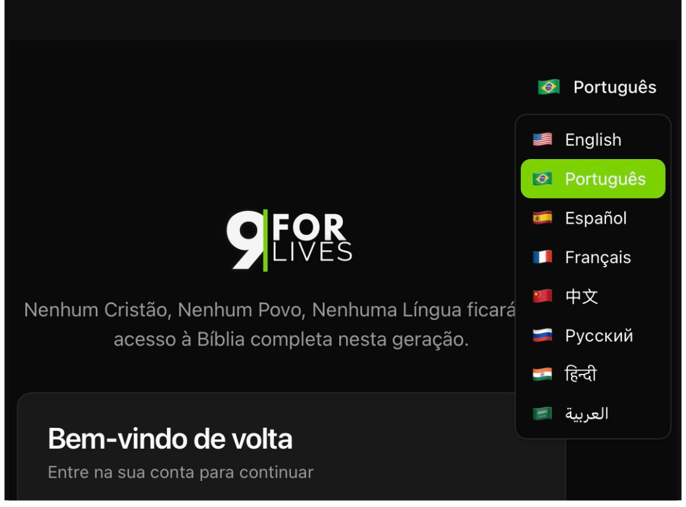
Ação
Utilize o seletor de idiomas no menu para alterar a língua do painel.
Contexto
Como a plataforma opera em múltiplos países, gerencie o painel no idioma em que for mais fluente — evita erros de interpretação, especialmente no cadastro de beneficiários.
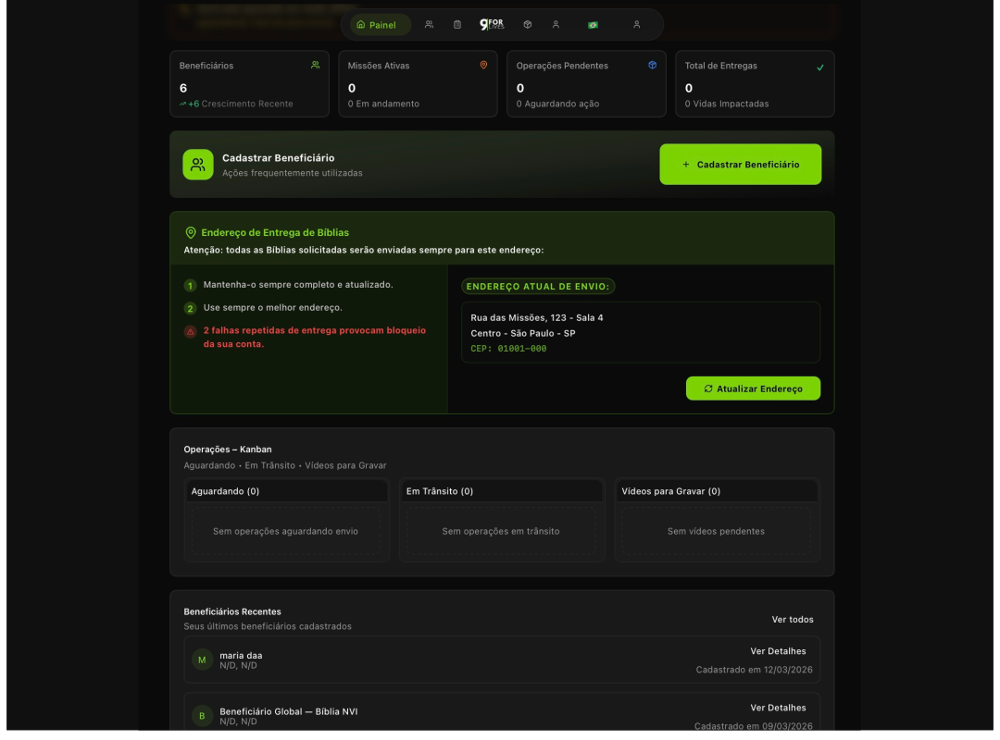
Ação
Acesse "Meu Perfil" no menu superior. Aqui ficam seus dados missionários, formação e documentos de credibilidade.
Contexto
Documentos anexados atestam sua idoneidade perante a organização e os grandes doadores institucionais. Um perfil completo e documentado transmite confiança e pode aumentar a velocidade de aprovação das suas operações. Mantenha sempre atualizado.
Perfil do Missionário
Esta seção exibe seus dados de identificação como missionário — seu nome, região de atuação, status de cadastro e os documentos que comprovam suas credenciais perante a organização e os doadores institucionais. Um perfil completo aumenta a velocidade com que suas operações são aprovadas e demonstra responsabilidade aos financiadores que revisam seu histórico.
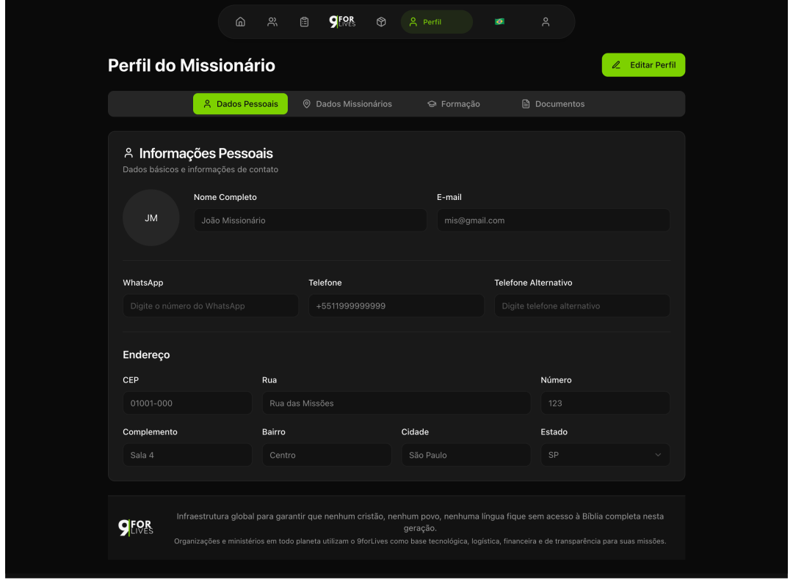
Regra de ouro logística #01 — O endereço de entrega
O endereço cadastrado no seu perfil é o único endereço reconhecido pelo sistema para envios físicos.
A mecânica: Não enviamos Bíblias para a casa do beneficiário final. Todas as Bíblias e Áudio Bíblias financiadas serão despachadas para o seu endereço — sem exceção.
O seu papel: Você atua como um hub logístico local. Você recebe a caixa, armazena temporariamente e faz a entrega final (última milha) nas mãos de cada beneficiário pessoalmente.
Um erro aqui significa Bíblias perdidas — sem possibilidade de recuperação.
O dashboard — centro de inteligência
Ao logar, você cai no dashboard. Ele fornece uma radiografia em tempo real de todo o seu impacto missionário.
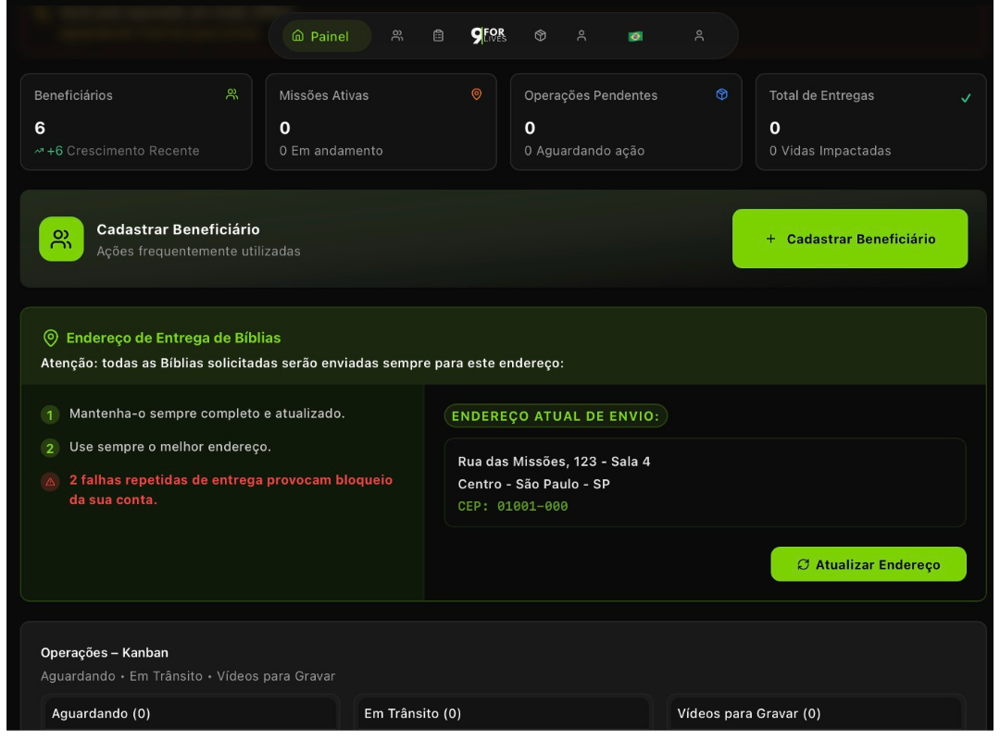
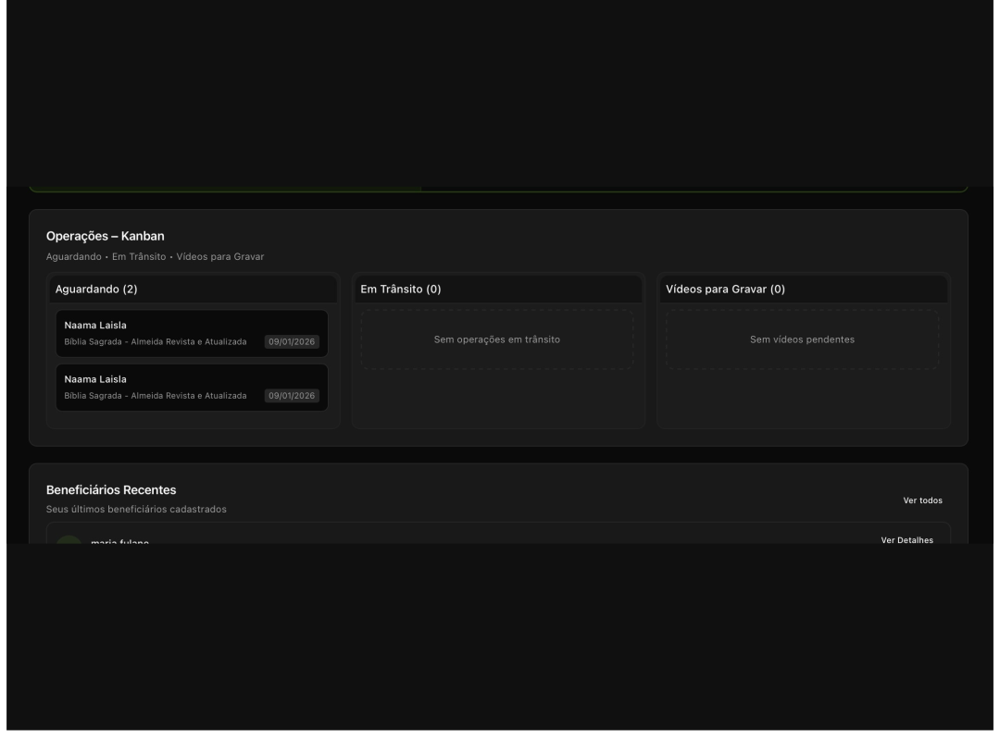
Arquitetura de abas — navegação avançada
No menu superior, existem três abas fundamentais. É vital não confundi-las — cada uma tem uma função completamente diferente e um momento diferente de uso no dia a dia.
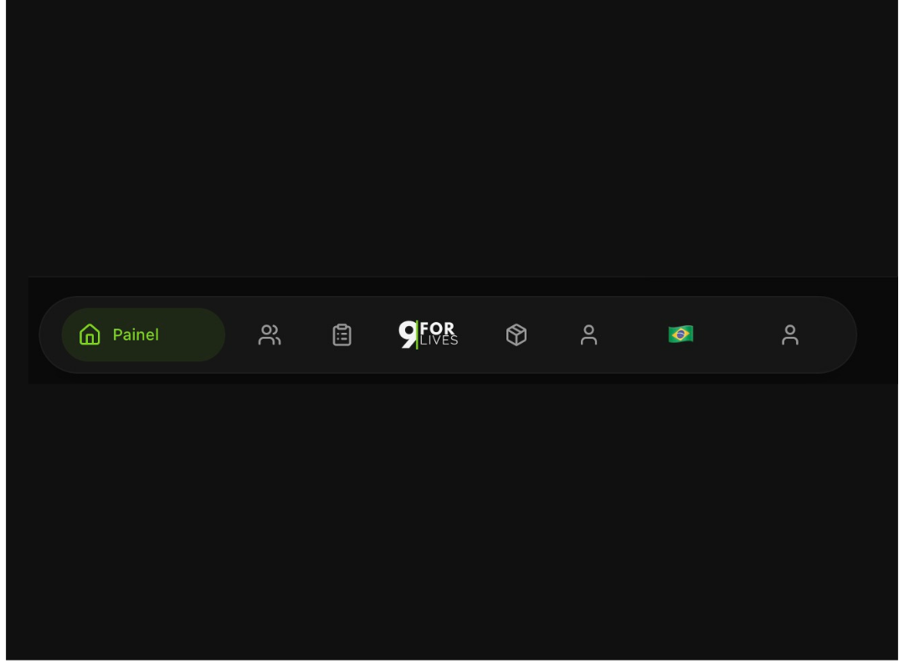
A lista de todos os seres humanos que você cadastrou. Ao clicar em um nome, você vê o histórico completo do beneficiário.
- Histórico completo de cada beneficiário
- O endereço dele — para você traçar rota de entrega
- Campo para vídeo de testemunho extra (acelera o financiamento)
Apenas pedidos recém criados sem financiamento. O pedido existe, mas aguarda um doador.
A aba mais importante do painel. Aqui só entra o que já tem dono e já foi pago. Uma operação existe nesta aba apenas quando uma requisição foi financiada.
- Acompanha a viagem da Bíblia até o seu endereço
- Consulta o nome exato dos financiadores antes de ir ao campo
- Realiza o upload do vídeo final de comprovação da entrega
Perfil da Operação
Ao clicar em qualquer operação, você abre o perfil completo dela. Dentro você encontrará: o nome e os dados de cadastro do beneficiário, o tipo de produto despachado (Bíblia Impressa ou Áudio Bíblia), o ou os financiadores responsáveis por essa doação, o status atual do envio e a sessão de vídeo onde você enviará a comprovação da entrega. Cada operação é uma unidade de prestação de contas fechada — ela só avança para concluída após a confirmação do vídeo.
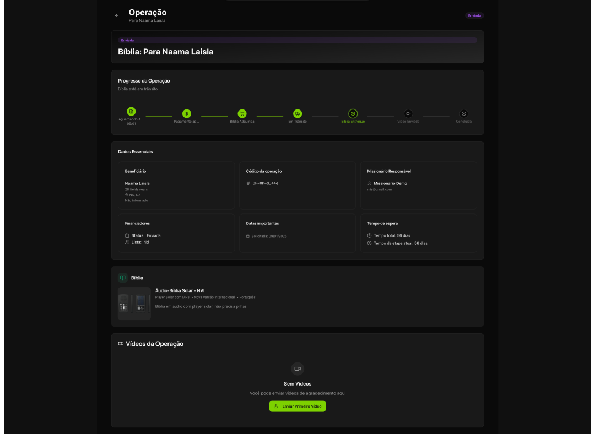
Se a Bíblia chegou e você precisa gravar o vídeo, você sempre estará nesta aba. Nunca nas outras.
Cadastro de beneficiários — o funil de entrada
Este é o momento de inserir uma nova vida no sistema. Cada dado pedido aqui alimenta o big data da organização e afeta diretamente a logística de produção e entrega.
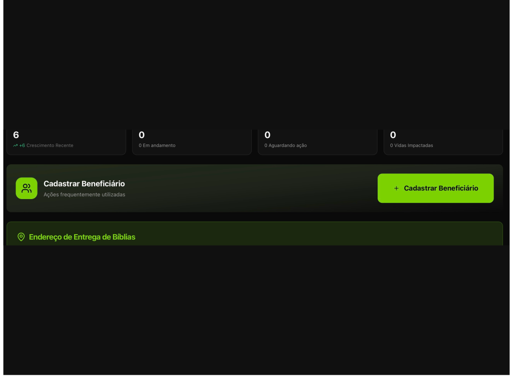
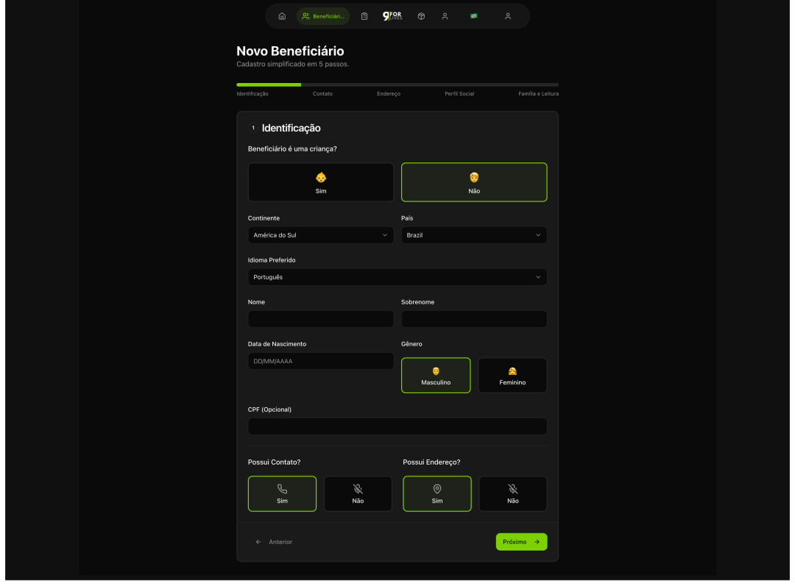
Regra: Criança selecionada → Bíblia em Áudio Infantil atribuída automaticamente. Adulto selecionado → produto definido pela capacidade de leitura (ver Etapa 4.4).
Dica: Se a pessoa fala um dialeto regional ou um idioma menos comum, selecione o idioma oficial mais próximo e adicione uma observação no campo de Informações Adicionais.
Nota: Este campo é diferente do contato de referência. Se o beneficiário tiver telefone, registrá-lo aqui permite que a organização e você entrem em contato diretamente quando necessário. Se ele não tiver, deixe este campo em branco e utilize o contato de referência registrado na Etapa 4.2.
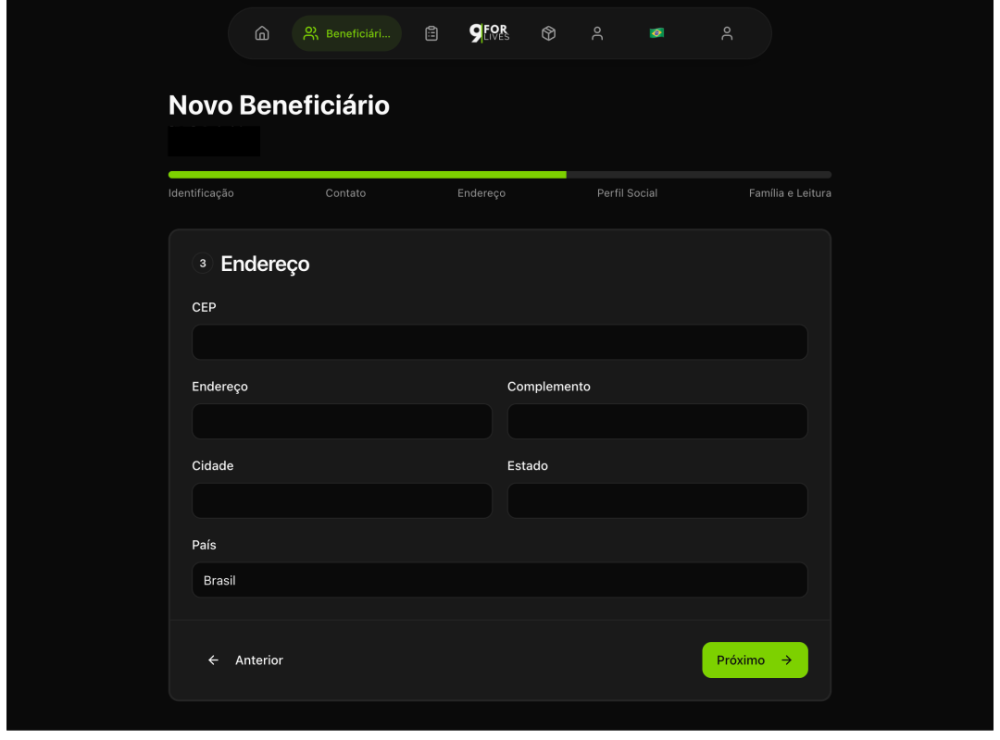
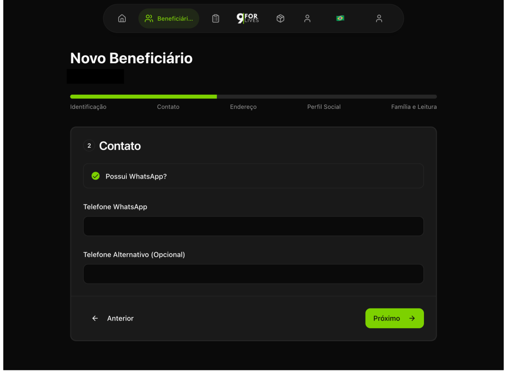
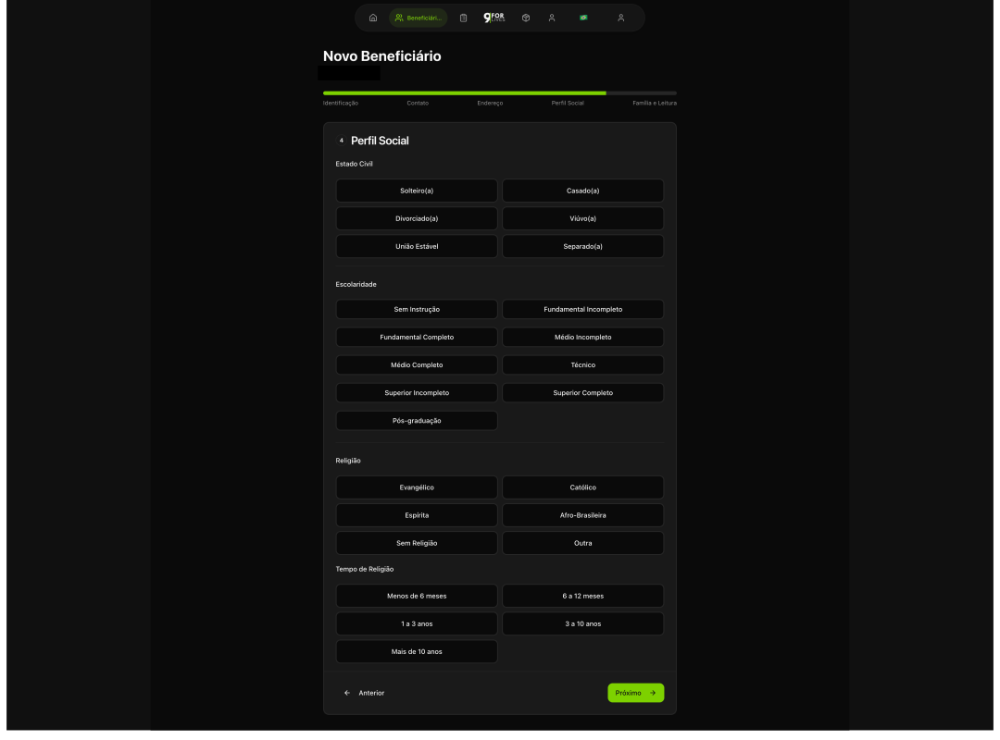
Contexto compliance — por que pedimos esses dados?
Estas perguntas não classificam nem excluem ninguém. O financiamento ocorre independentemente de religião, escolaridade ou estado civil.
Servem exclusivamente para geração de relatórios estatísticos internos. Regra clara e inegociável: não existe restrição de entrega. A Bíblia deve ser entregue para qualquer pessoa, de qualquer crença, sem julgamento.
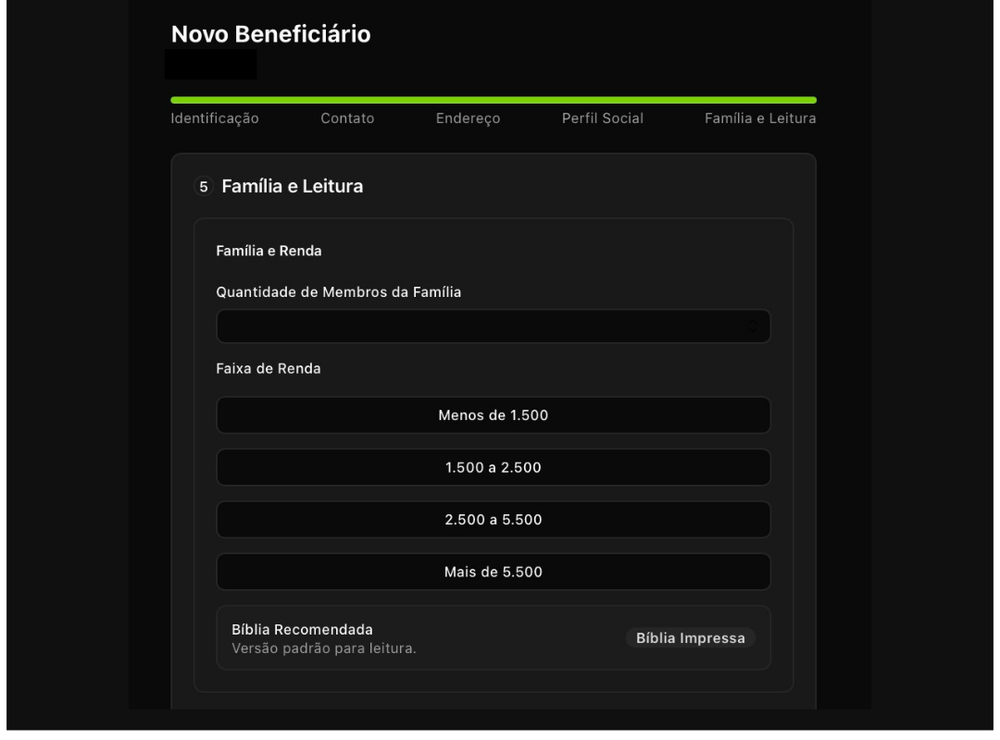
Nota: Este campo se aplica apenas a beneficiários adultos. Se o beneficiário foi cadastrado como criança, este campo é ignorado — a Bíblia em Áudio Infantil é atribuída automaticamente.
Regra de ouro logística #02 — capacidade de leitura define o produto
Preste extrema atenção ao preencher este campo, pois isso define o que será fabricado e enviado.
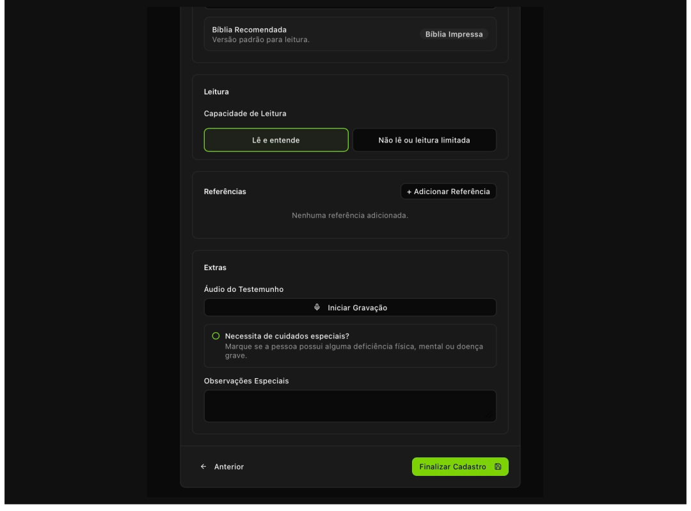
Ação final
Clique em "Finalizar Cadastro". A requisição é criada instantaneamente. O beneficiário entra na fila de espera, a requisição aparece na aba Requisições e o sistema começa a buscar um doador automaticamente.
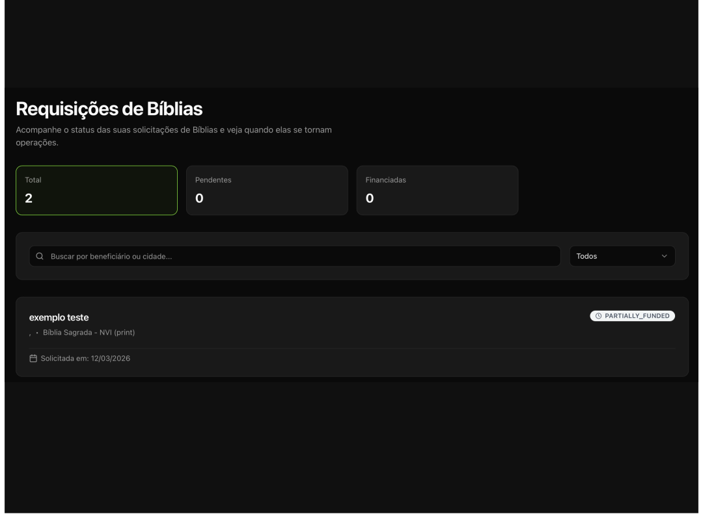
O vídeo de prestação de contas — o coração da operação
A doação não termina quando o beneficiário pega a Bíblia; ela termina quando o financiador assiste ao vídeo. Sem esse fechamento de ciclo, o sistema de confiança quebra e seu perfil pode ser impedido de gerar novas operações.
A prova de vida (compliance absoluto)
É a prova irrefutável de que o dinheiro do doador não foi desviado, de que a Bíblia chegou ao destino correto e de que o beneficiário cadastrado é real. Sem este vídeo, a doação não tem comprovação jurídica ou moral.
O recibo emocional
Para quem doa do outro lado do mundo, ver o sorriso e ouvir a voz do beneficiário é a maior recompensa possível. É exatamente isso que motiva os doadores a continuarem financiando o seu projeto.
A sua credibilidade e score oculto
Missionários que enviam vídeos bem direcionados e autênticos ganham um score de confiança oculto com os doadores. Suas próximas requisições serão financiadas muito mais rápido.
"Não chegue gravando de surpresa. O vídeo precisa transmitir dignidade, cuidado e autenticidade."
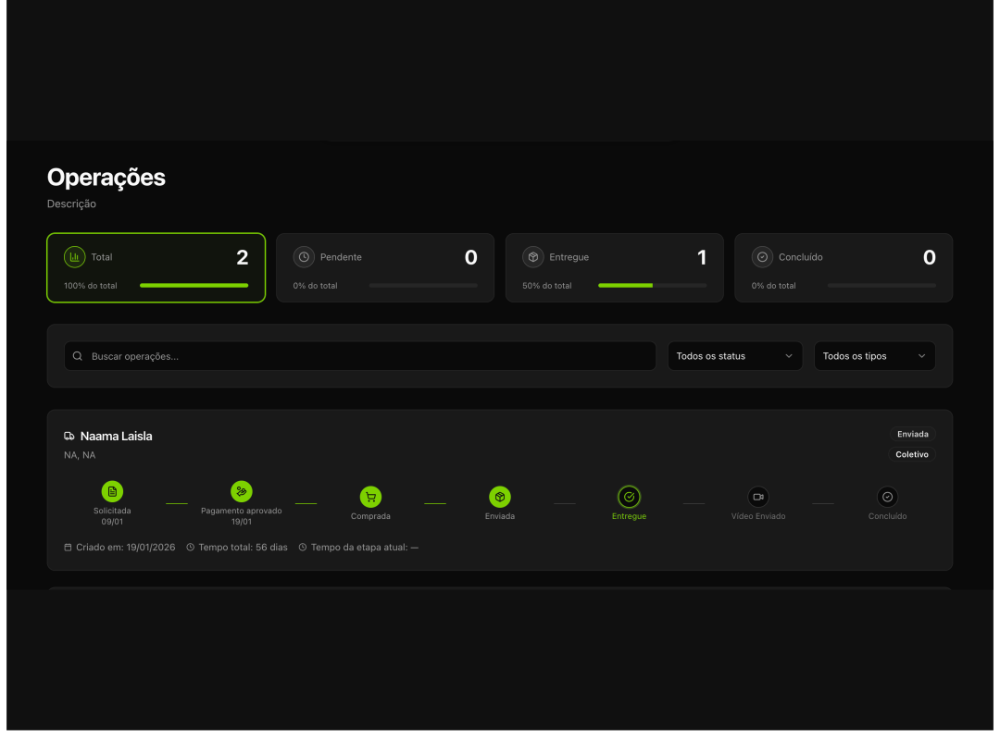
No sistema — antes de sair para o campo
Abra a aba Operações, clique na entrega que será feita e anote o nome exato dos financiadores.
Pode haver 1, 2 ou até 3 nomes — isso é chamado de Split Funding, quando várias pessoas dividem o custo de uma Bíblia. Você precisará falar todos os nomes no vídeo. Nunca omita nenhum.
Com o beneficiário — antes de gravar
Explique o que vai acontecer antes de ligar a câmera. Use esta abordagem:
Isso acalma a pessoa, cria expectativa positiva e a prepara emocionalmente para o momento da gravação. Nunca surpreenda o beneficiário com a câmera ligada.
Dentro do perfil da operação, existe uma seção dedicada chamada Sessão de Vídeo. É aqui que o missionário gerencia tudo relacionado ao vídeo de comprovação da entrega para aquela operação específica.
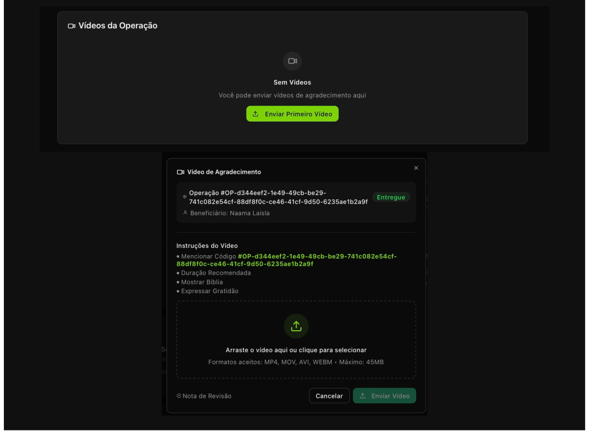
Como Funciona a Sessão de Vídeo
A Sessão de Vídeo é a etapa final dentro de cada operação. É onde você envia a prova visual de que a entrega aconteceu. Você encontrará um botão claramente identificado para adicionar ou fazer o upload de um vídeo diretamente dessa tela.
Ao clicar no botão de upload, uma janela pop-up será exibida. A partir dela, você pode gravar diretamente pela câmera do seu dispositivo ou selecionar um arquivo de vídeo existente na sua galeria. Após selecionar o arquivo, confirme o envio e aguarde o sistema processar.
Após o upload bem-sucedido do vídeo, o status da operação é atualizado automaticamente — o sistema encerra o ciclo de entrega e envia uma notificação ao financiador com o link para assistir ao vídeo.
O Papel do Missionário no Processo de Vídeo
Como missionário, você é ao mesmo tempo o Diretor e o Apresentador de cada vídeo de entrega. Você é responsável por planejar a gravação antes de sair para o campo, conduzi-la com cuidado e clareza na presença do beneficiário, e fazer o upload pelo sistema o mais rápido possível após a entrega.
Você nunca deve entregar uma Bíblia sem gravar e enviar o vídeo. O vídeo não é opcional — ele é o mecanismo que fecha o ciclo de prestação de contas entre o financiador, a organização e o beneficiário. Entregas sem comprovação em vídeo são tratadas como operações incompletas e afetarão a capacidade do seu perfil de gerar novas requisições financiadas.
Se você não conseguir gravar no dia da entrega por uma circunstância excepcional, documente o motivo no campo de Informações Adicionais da operação e faça o upload do vídeo o quanto antes. Operações incompletas recorrentes serão analisadas pela organização.
Você, missionário, é o Apresentador e o Diretor desta cena. Siga exatamente esta ordem — sem improvisar a sequência.
A abertura — contexto geográfico
Comece situando o doador no mundo. Ele precisa saber onde a Bíblia chegou.
A apresentação do beneficiário e do produto
Mostre claramente quem está recebendo e o que está recebendo. Garanta que a Bíblia ou Áudio Bíblia esteja visível na câmera, nas mãos da pessoa.
O momento crítico — o agradecimento nominal
Olhe diretamente para a câmera e cite o nome exato de quem pagou. Este é o gatilho psicológico mais poderoso para fidelizar o doador — ouvir o próprio nome é o que cria o vínculo emocional que gera novas doações. Cite todos os nomes — nunca omita nenhum.
O espaço de fala — empoderamento do beneficiário
Vire o celular ou o microfone para o beneficiário. Este é o momento dele.
- Se ele for tímido: um simples "Muito obrigado" com sorriso genuíno já é perfeito e suficiente
- Se ele quiser falar livremente: deixe-o contar como aquilo mudará a vida dele — a autenticidade é o que mais emociona os doadores
- Nunca force discursos longos, roteiros decorados ou falas religiosas se a pessoa não se sentir à vontade
Para garantir que o doador consiga assistir com qualidade, aplique este checklist rápido antes de gravar:
Luz (iluminação)
Nunca grave contra o sol ou contra uma janela — a pessoa ficará apenas uma sombra escura. A luz deve estar batendo no rosto de vocês, nunca atrás.
Som (áudio)
Evite gravar perto de rodovias, caixas de som ou ventanias fortes. O doador precisa ouvir o próprio nome sendo citado com total clareza.
Enquadramento
Grave do peito para cima. O doador quer ver a expressão facial do beneficiário e a Bíblia nas mãos. Rostos distantes não criam conexão emocional.
Ação
Após gravar, clique para finalizar o upload do vídeo dentro da operação.
O que acontece nos bastidores
O sistema dispara uma notificação para o celular e e-mail do doador. Ele ouvirá o próprio nome sendo falado e verá o rosto do beneficiário.
- A operação é encerrada com 100% de sucesso e transparência
- Seu indicador de Entregas Realizadas no dashboard sobe
- A confiança do doador em você é consolidada
- A probabilidade de esse mesmo doador financiar a sua próxima requisição acaba de ser multiplicada
O credo do missionário digital
Para não errar, grave estas duas premissas fundamentais antes de iniciar o dia:
O meu endereço no perfil está blindado a erros
Pois tudo chegará nele. Verifico regularmente meu CEP, rua, número e complemento. Sou o hub logístico — qualquer erro no endereço é uma missão perdida.
As Bíblias chegam apenas a quem realmente não tem outro acesso
Cada Bíblia financiada por esta plataforma é destinada a alguém que não tem outra forma de recebê-la. Se uma pessoa tem condições de adquirir ou acessar uma Bíblia por conta própria e ainda assim recebe uma doada, isso significa tirar a oportunidade de quem não teria absolutamente nenhum acesso. Meu compromisso é alcançar exclusivamente quem não consegue acessar uma Bíblia por nenhum meio — não quem simplesmente ainda não tinha uma.
Bom trabalho no campo! Sua organização e precisão digital garantem que a Palavra continue chegando a quem mais precisa.